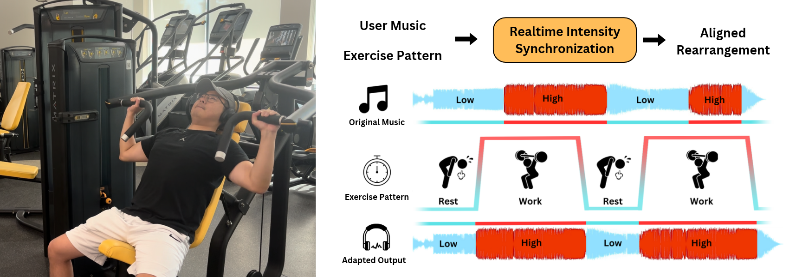

ISMIR 2025 — International Society for Music Information Retrieval Conference

We propose a system to adapt a user’s music to their exercise by aligning high-energy music segments with intense intervals of the workout. The structure of a song may not match the listener’s natural phases of rest and work, so they rest longer than needed while waiting for a motivational section, or lose motivation mid-set when it ends too soon. RISE estimates the intense segments in music and uses cutpoint-based rearrangement to extend and shorten them in real time to fit the ongoing exercise routine.
@inproceedings{wang2025rise,
author = {Wang, Alexander and Donahue, Chris and Jain, Dhruv},
title = {RISE: Music Rearrangement for Realtime Intensity Synchronization With Exercise},
booktitle = {Proceedings of the 26th International Society for Music Information Retrieval Conference},
publisher = {ISMIR},
year = {2025},
pages = {34--41},
doi = {10.5281/zenodo.17706321}
}